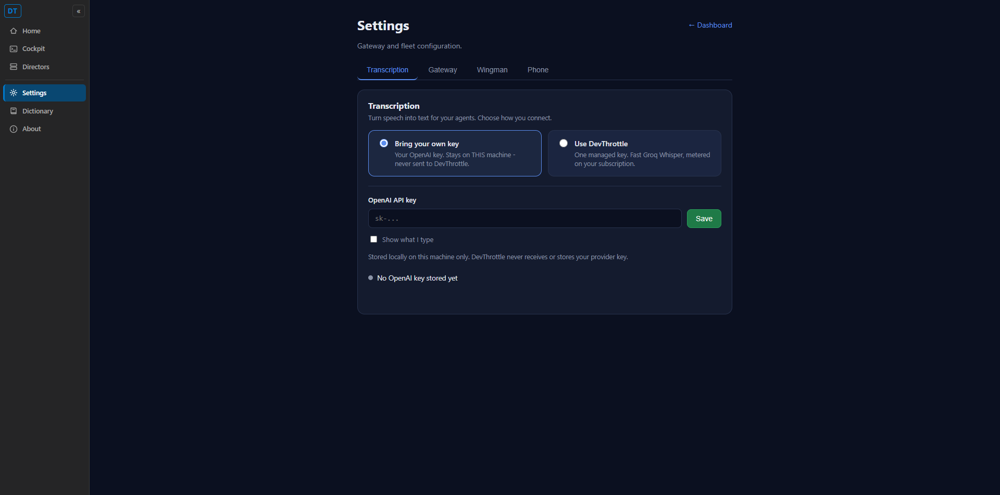
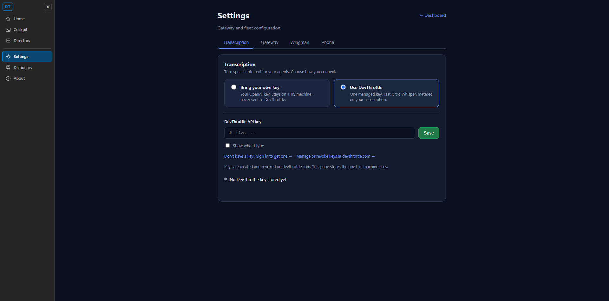
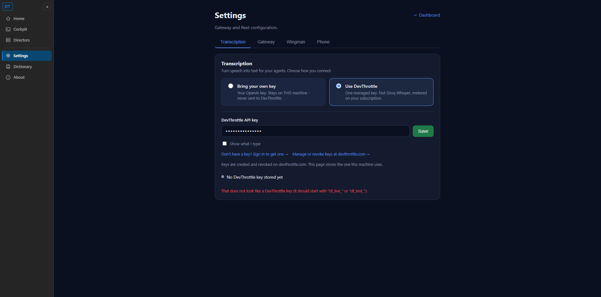

Developer Agent proof. Branch issue-497-transcription-settings. Build clean (0 warnings, 0 errors); 50 transcription/resolver tests pass.
dt_ & sk- format validation, the two devthrottle.com links, and a status indicator
(src/CcDirector.Cockpit/wwwroot/pages/settings.html).NavMenu.razor) and the
plain-page rail (tool-nav.js); the old keys.html page deleted and /keys
now 302-redirects to /settings (Program.cs).transcription_mode ("byo" | "devthrottle") via
TranscriptionModeConfig + a new GET/PUT /gateway/transcription-mode endpoint, mirroring
the existing addressing_mode pattern. The two keys persist in the existing Gateway vault
(OPENAI_API_KEY, DEVTHROTTLE_API_KEY).OpenAiKeyResolver.ResolveEndpointAsync +
TranscriptionEndpointResolver: BYO -> https://api.openai.com/v1 with the OpenAI key;
DevThrottle -> https://devthrottle.com/api/v1 with the dt_ key. The batch transcription
provider, live-preview transcriber, and cleanup orchestrator are now base-URL aware; DictationEndpoint
selects the provider by mode (BYO keeps the OpenAI Realtime path; DevThrottle uses the OpenAI-compatible batch
endpoint, the contract's one in-scope endpoint).| Criterion | Result | Evidence |
|---|---|---|
| Settings shows a Transcription tab; no standalone API Keys sidebar item | PASS | Screenshot 01/02: tab reads "Transcription"; left rail has Home / Cockpit / Directors / Settings / Dictionary / About - no "API Keys" item. /keys returns HTTP 302 -> /settings (verified via curl). |
| User can switch between the two modes; the selection and key persist across restarts | PASS | Screenshots 01 -> 02 show the mode switch and panel swap. Persistence: mode in config.json (TranscriptionModeConfigTests.SetThenGet_*_PersistsAcrossReread - a fresh disk read is the restart path), keys in the file-backed Gateway vault. |
Valid dt_ key + DevThrottle mode transcribes through devthrottle.com/api/v1 |
ROUTING PROVEN; E2E BLOCKED | Routing proven by OpenAiKeyResolverEndpointTests.ResolveEndpoint_DevThrottleMode_* (base URL + key name + vault fetch). True end-to-end transcription is blocked: per issue section 7 the proxy is not yet deployed to devthrottle.com. |
BYO mode + valid sk- key transcribes directly via OpenAI |
PASS (routing) | ResolveEndpoint_ByoMode_PullsOpenAiKey_AndTargetsOpenAi and ResolveEndpoint_StandaloneByo_UsesLocalOpenAiKey assert the OpenAI base URL + key. The existing OpenAI dictation path is unchanged for BYO. |
| The BYO key is never transmitted to any DevThrottle/devthrottle.com endpoint | PASS | ResolveEndpoint_ByoMode_NeverPairsByoKeyWithDevThrottleUrl asserts the BYO base URL contains no "devthrottle.com" and no request URL touches it. TranscriptionEndpointResolver.Resolve(Byo) pairs the OpenAI key only with api.openai.com. |
Invalid dt_ key surfaces the error message cleanly in the UI |
PASS | Screenshot 03: an invalid key triggers a clean red message "That does not look like a DevThrottle key...". A runtime 401 from the proxy would surface through the same message channel (the save error envelope) once the proxy is deployed. |
POST /api/v1/audio/transcriptions) is implemented in the private devthrottle_internal
repo but is not yet deployed to devthrottle.com. So true DevThrottle-mode end-to-end transcription and a
real 401 from a bad dt_ key cannot be exercised from this build yet. Everything specified and testable
now - the Transcription UI, the mode chooser, mode/key persistence, mode-based routing (base URL + key), the
BYO-never-to-DevThrottle guarantee, and key format validation - is implemented and verified. The chat-completions
(/chat/completions) cleanup path and large-file upload remain out of scope per the issue.
No new container and no new external system (the DevThrottle proxy is an OpenAI-compatible swap of the existing
"OpenAI API" external system). Adds one config.json key (transcription_mode) and one vault key name
(DEVTHROTTLE_API_KEY), both consistent with the documented DT-01 Key Vault model (stored on the user's own
Gateway box, never logged, never committed). Docs updated:
docs/architecture/gateway/GATEWAY_KEY_VAULT.md and
docs/cencon/architecture_manifest.yaml. No blocking security rule (DT-01..DT-NN) is violated.
01 - Bring your own key (default mode)

02 - Use DevThrottle mode (after selecting the card)

03 - Invalid DevThrottle key validation

The Transcription UI is served by the Cockpit (the Gateway's dashboard). For proof the Cockpit project was run
directly on an isolated loopback port (http://127.0.0.1:7491, away from the user's running stack), the
solution built clean to slot 11, and the slot torn down afterward (no user Director touched). The pages were driven and
screenshotted with the browser harness.
I believe this is finished for everything the issue specifies and that is testable today. The one unverifiable item - live DevThrottle transcription end-to-end - is blocked solely by the undeployed proxy (issue section 7), and the routing that will use it once deployed is unit-proven.